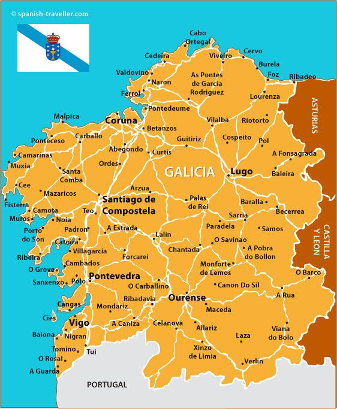
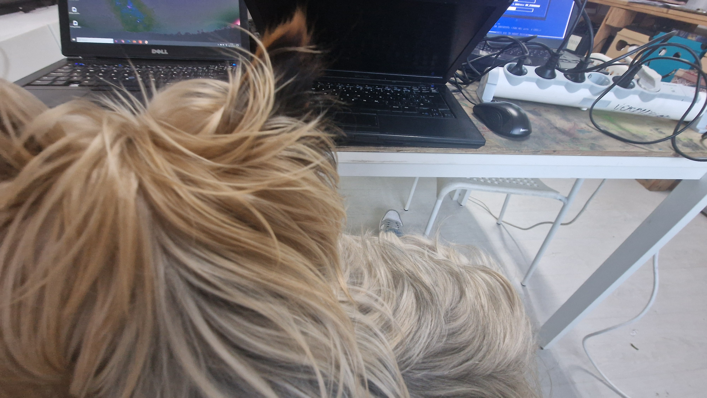

PCTO all'estero: Vermislab
Tutor aziendale: Paz Picallo
Tutor scolastico: Prof. Simone Austeri
Località:Santiago de Compostela, Galizia (Spagna)
Durata: 4 settimane | 6 gennaio 2025 - 4 febbraio 2025
Motivazione della scelta
Uno dei miei obiettivi principali nella vita è quello di conoscere e imparare il più possibile, e quando mi si è presentata l’opportunità di acquisire esperienzalavorativa in un paese diverso da quelli che conosco non ci ho pensato due volte prima di candidarmi. Volevo usare le mie conoscenza della lingua spagnola per scoprire e incorporarmi in un ambiente lavorativo diverso da quello che conoscevo ed esplorare unaregione del mondo così particolare come la Galizia.

Santiago de Compostela
Santiago de Compostela è una città situata al nord-ovest della Spagna ed è importante per i cattolici visto che è la meta finale del Cammino di Santiago. È una città di medie dimensioni, paragonabili a quelle di Terni, è una città universitaria e molto viva. Attrae turisti da tutto il mondo, anche non cattolici, grazie alla sua divisione in città antica, piena di elementi artistici e architettura medievale, e città moderna, con un vasto numero di negozi e attrazioni moderne. È una meta eccezionale per gli studenti perché, essendo una città universitaria, è piena di giovani ed è molto ben collegata. L’unico aspetto negativo a mio parere è la sua piovosità che spesso ti impedisce di visitare la città liberamente.

L'Azienda: Vermislab
Versmislab è un istituto extrascolastico pomeridiano al quale possono partecipare ragazzi dai 3 fino ai 14 anni. È una realtà educativa che crea percorsi dedicati alla scienza, alla tecnologia e alla creatività. I ragazzi imparano la programmazione, robotica, biologia, sviluppo di videogiochi e a lavorare in gruppo. I programmi uniscono gioco e apprendimento, permettendo agli studenti di esprimersi, esplorare nuovi interessi e sviluppare competenze utili per il futuro.

Technical Roles and Responsibilities
Highlighting the international aspect of the project.
My experience evolved from general educational support to a specialized technical role, allowing me to apply my computer science background in a professional setting.
- Hardware maintenance and diagnostic of laptops (ThinkPad series).
- Software troubleshooting and OS configuration.
- Setting up new devices, including 3D printers and tablets.
- Assisting students in solving technical bugs during their coding projects.
- Explaining hardware components and technical concepts to curious students.
Conclusioni e Riflessioni
Nel percorso delle superiori, questa a mio parere è stata indubitabilmente una tra le esperienze più formative in assoluto, sia dal punto di vista professionale che umano. Mi ha aiutato a scoprire molte cose che non conoscevo e mi ha permesso di applicare e sviluppare ulteriormente le mie conoscenze attuali, mi ha messo a contatto con il mondo del lavoro ed è stata veramente una sfida piacevole.